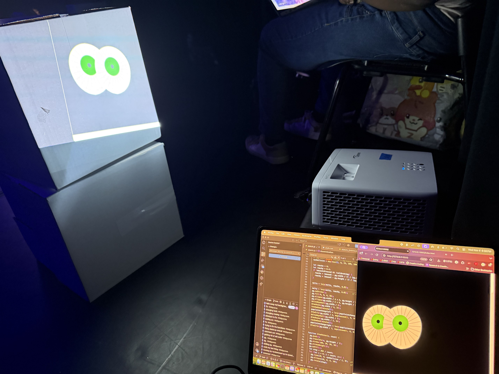
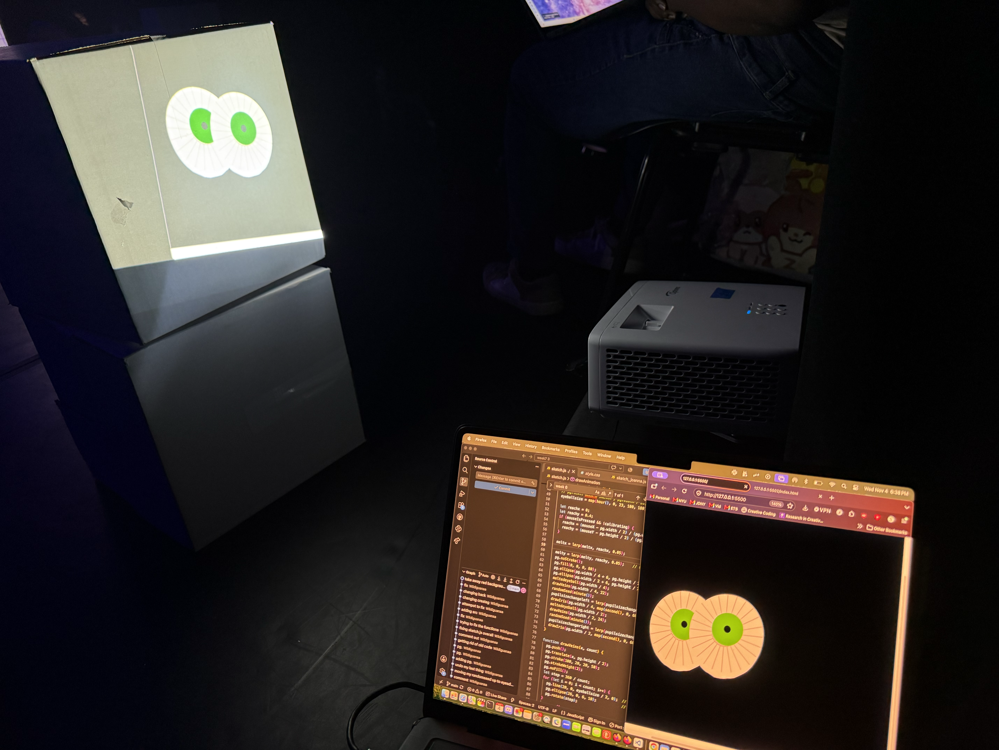
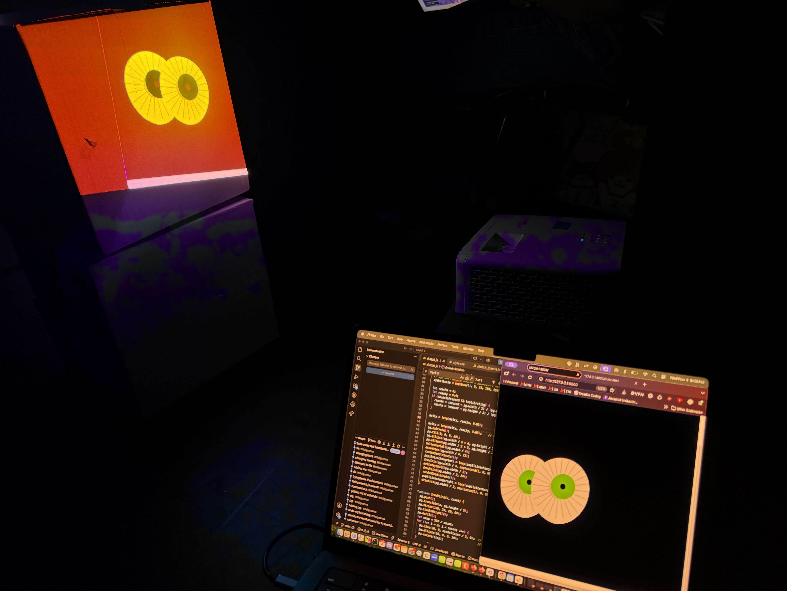
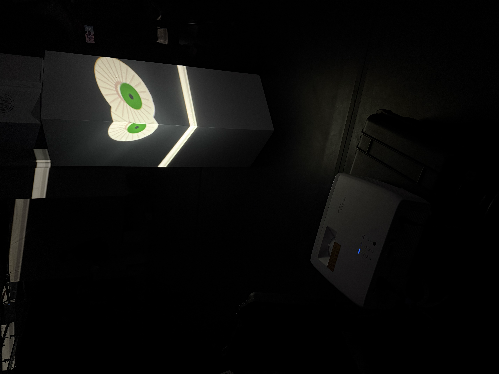
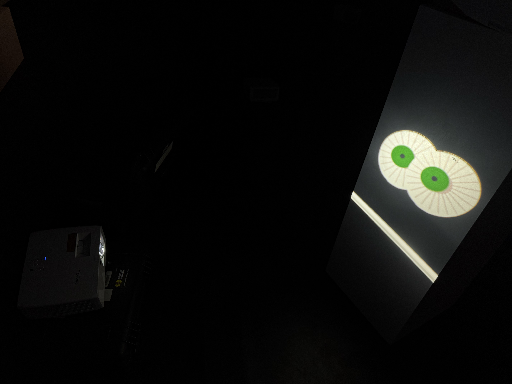
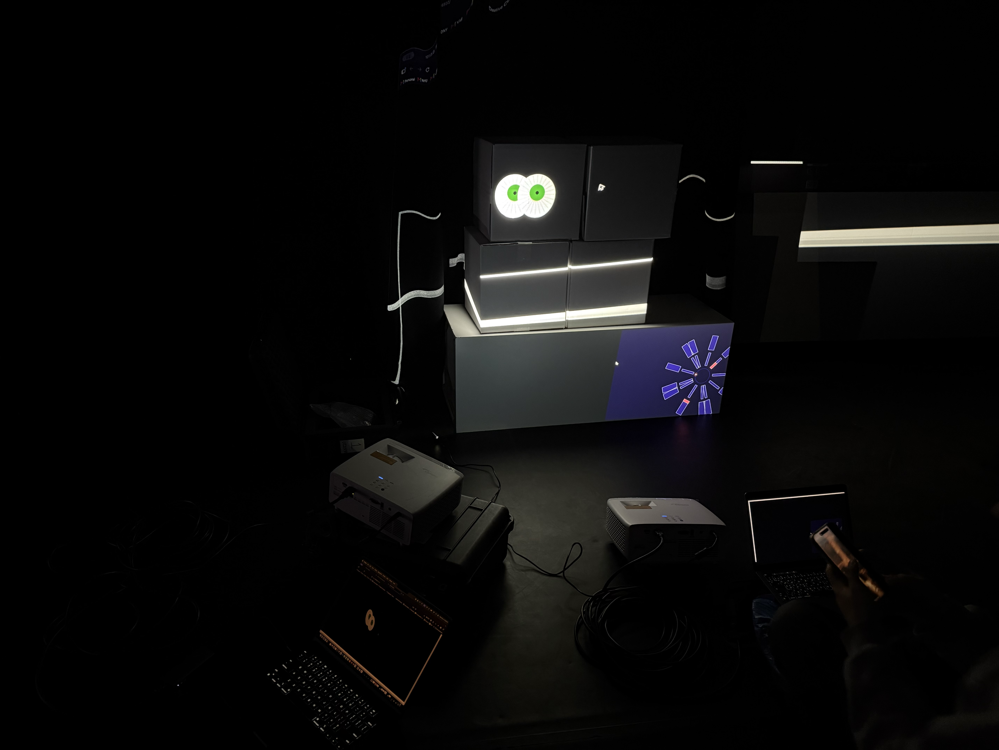

Inspired by Salvador Dalí's 1931 melting clocks in his painting titled “The Persistence of Memory”, I wanted to add in an aspect of surrealism into the clocks animation assignment as I really am personally passionate and in love with that genre of art. I began by brainstorming what my content and visuals could contain, settling on eyes as not only are they circular like many clocks but also just as time records human existence, eyes capture life and give us a means of interpreting it. Notably, I wanted the eyes to be staring at the user, a weird interpretation of time staring right at us the observers. After troubleshooting and making as much of an interactive eye animation as I managed during the constraints of our allocated time, I found myself in a group attempting to simultaneously live projection map all of our various animations and interpretations of this assignment all in one sketch.js file. This proved very tricky. I was the initial student who was hosting everyone’s code in my shared sketch.js file (I did the live share!). A hurdle we encountered was the many global variables conflicting amongst all of our various codes, along with one student having introduced textures to his code (of which I am not very familiar with) that got us off to a rocky start. Everyone in my group was so sweet and patient despite those setbacks (and the many other miscellaneous confusing errors, such as the motion sensor not detected one). I supported everyone in trying to adjust their code (with their permission!) in the shared file to try and make things cohesive and cooperative, many times to no avail or very little success (we managed to get some individual’s code partially projected at one point during that initial class session). Our group maintained open communication and a very kind approach to each other, so we were having a good time despite all of the challenges. I was fortunate that during Synth Club I bumped into another professor, Ofair (I apologize if I misspelled his name!), who coached me through introducing createGraphics in my code which ended up helping a lot! We did do lots of modifications. Notably, we split our big group in two, and Zezo and I worked together with help from you, Professor, to manage to get our work up and going! Zezo and I hung out after class and I am glad I got to know him. As I have much experience with projectors, those were no challenge for me. You shared LUMA as a resource with the class. You can actually see my work for them a few years ago, archived on their website here! https://lumafestival.com/feature/art-of-our-faces/ My last name is different, but it is still me haha. Even when my animation was projecting, I helped Zezo by trying to troubleshoot his (which you and he ended up figuring out!) and I helped him set up his projection with mine.





